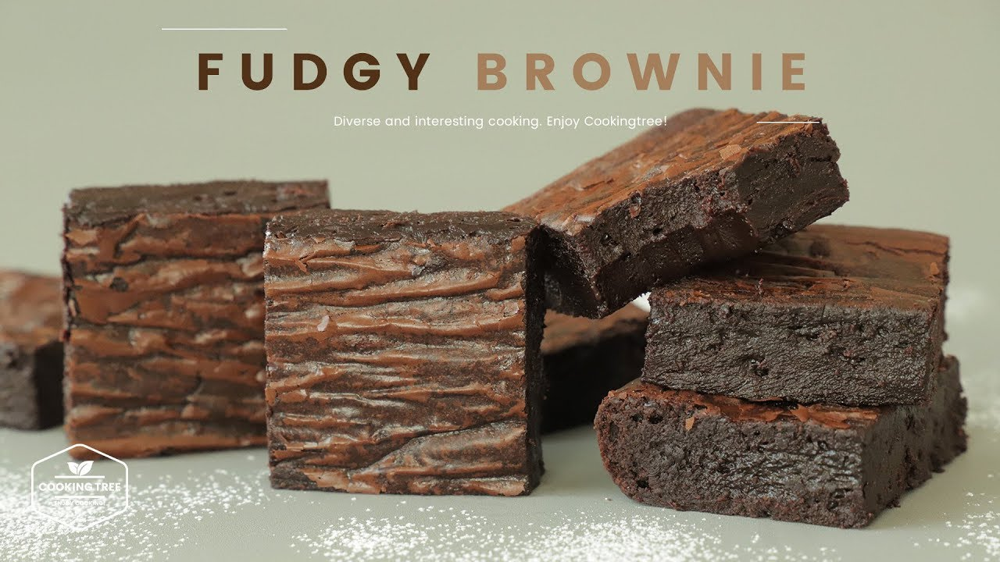

Fudgy Brownies

Description:
I am sharing my recipe for the best fudgy brownies!
A special addition of espresso gives these brownies
a rich flavor that blends itself with the rest of the ingredients!
These brownies will deliver you a dense, fudgy middle with crinkly tops,
which is achieved by whisking the egg mixture until it is full and dense.
Make sure to let it harden in the fridge first
and enjoy it with coffee and milk.
Ingredients:
- 200g dark chocolate
- 120g unsalted butter
- 120g egg
- 150g brown sugar
- 2g vanilla extract
- 40g all purpose flour (or sub in almond flour)
- 25g cocoa powder
- 2g salt
Steps:
-
Brown the butter. Then add the chopped chocolate chunks and mix
until fully melted.
-
Mix the egg, brown sugar, and vanilla extract on top of a boiled water
until all the sugar is melted.
-
Beat the egg mixture using a hand mixer until fully whipped.
Then combine the chocolate mixture.
-
Sift and fold the flour, cocoa powder, and salt onto the mixture.
Do not overmix as this will make the texture to be cake-like.
- Transfer the batter to the pan and make it flat.
- Bake in a preheated oven at 340F for 25-30 min. Let it cool before serving.